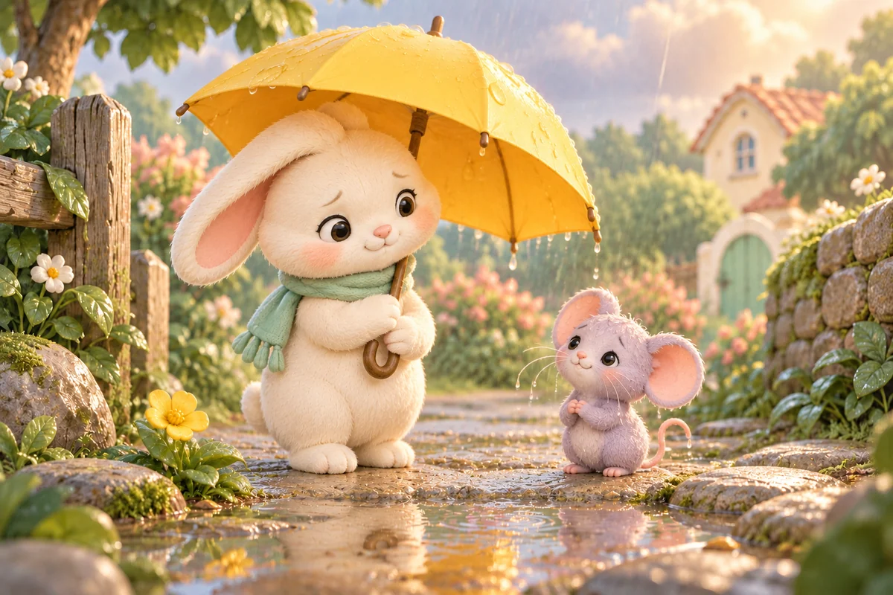
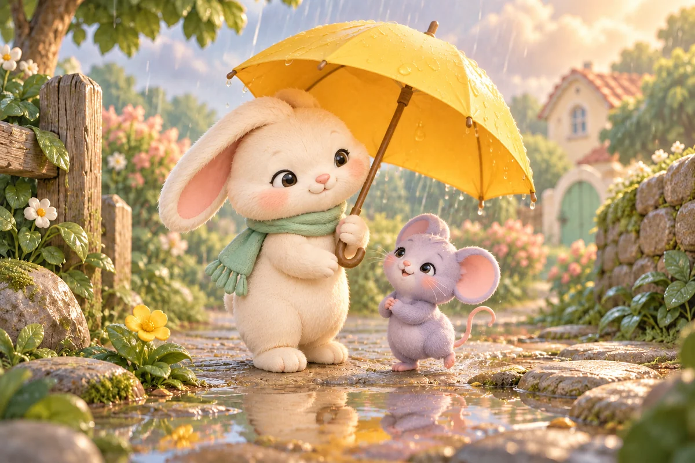
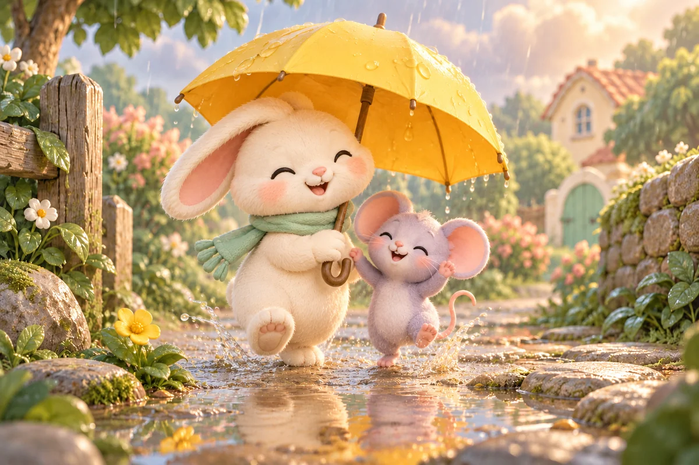
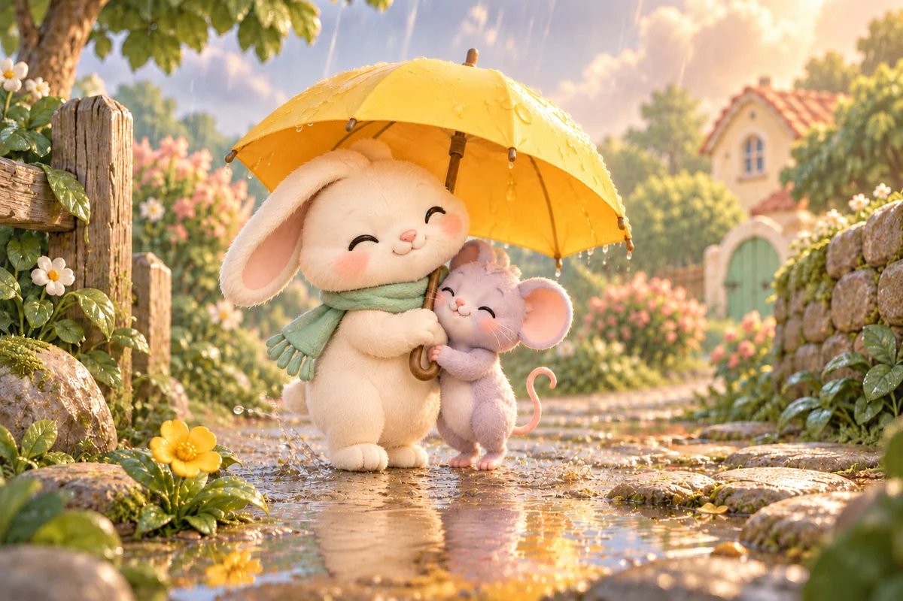

PAGE 01Rain tapped on a tiny yellow umbrella.

PAGE 02Bunny spotted a mouse with very soggy whiskers.

PAGE 03She lifted her umbrella and made room for her new friend.

PAGE 04They splashed through the puddles together.

PAGE 05A little kindness made the rainy day feel warm.